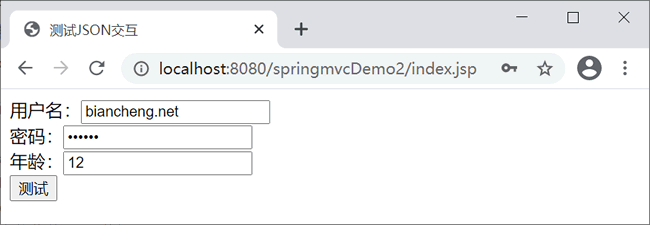
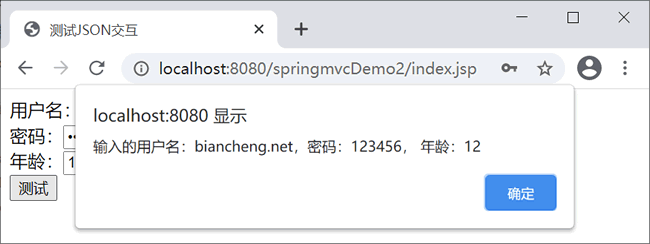

首页 > 编程笔记
Spring MVC JSON数据交互
Spring MVC 在数据绑定的过程中需要对传递数据的格式和类型进行转换，它既可以转换 String 等类型的数据，也可以转换 JSON 等其他类型的数据。本节将针对 Spring MVC 中 JSON 类型的数据交互进行讲解。
在使用注解开发时需要用到两个重要的 JSON 格式转换注解，分别是 @RequestBody 和 @ResponseBody。
需要注意的是，在该处理方法上，除了通过 @RequestMapping 指定请求的 URL，还有一个 @ResponseBody 注解。该注解的作用是将标注该注解的处理方法的返回结果直接写入 HTTP Response Body（Response 对象的 body 数据区）中。一般情况下，@ResponseBody 都会在异步获取数据时使用，被其标注的处理方法返回的数据都将输出到响应流中，客户端获取并显示数据。
对于复杂类型的转换，json-lib 在将 JSON 转换成 Bean 时还有缺陷，比如一个类里包含另一个类的 List 或者 Map 集合，json-lib 从 JSON 到 Bean 的转换就会出现问题。
所以 json-lib 在功能和性能上面都不能满足现在互联网化的需求。
但是 Jackson 对于复杂类型的 JSON 转换 Bean 会出现问题，一些集合 Map、List 的转换出现问题。而 Jackson 对于复杂类型的 Bean 转换 JSON，转换的 JSON 格式不是标准的 JSON 格式。
Gson 主要提供了 toJson 与 fromJson 两个转换函数，不需要依赖其它的 jar 文件，就能直接在 JDK 上运行。在使用这两个函数转换之前，需要先创建好对象的类型以及其成员才能成功的将 JSON 字符串转换为相对应的对象。
类里面只要有 get 和 set 方法，Gson 完全可以将复杂类型的 JSON 到 Bean 或 Bean 到 JSON 的转换，是 JSON 解析的神器。Gson 在功能上面无可挑剔，但性能比 FastJson 有所差距。
FastJson 不需要依赖其它的 jar 文件，就能直接在 JDK 上运行。
FastJson 在复杂类型的 Bean 转换 JSON 上会出现一些问题，可能会出现引用的类型，导致 JSON 转换出错，需要制定引用。
FastJson 采用独创的算法，将 parse 的速度提升到极致，超过所有 JSON 库。
综上 4 种 JSON 技术的比较，在项目选型的时候可以使用 Google 的 Gson 和阿里巴巴的 FastJson 两种并行使用，如果只是功能要求，没有性能要求，可以使用Google 的 Gson。如果有性能上面的要求可以使用 Gson 将 Bean 转换 JSON 确保数据的正确，使用 FastJson 将 JSON 转换 Bean。
Maven 项目在 pom.xml 文件中添加以下依赖。
JSON 概述
JSON（JavaScript Object Notation, JS 对象标记）是一种轻量级的数据交换格式。与 XML 一样，JSON 也是基于纯文本的数据格式。它有对象结构和数组结构两种数据结构。1）对象结构
对象结构以{开始、以}结束，中间部分由 0 个或多个以英文,分隔的 key/value 对构成，key 和 value 之间以英文:分隔。对象结构的语法结构如下：
{
key1:value1,
key2:value2,
...
}
{
"pname":"张三",
"password":"123456",
"page":40
}
2）数组结构
数组结构以[开始、以]结束，中间部分由 0 个或多个以英文,分隔的值的列表组成。数组结构的语法结构如下：
{
value1,
value2,
...
}
{
"sno":"201802228888",
"sname":"张三",
"hobby":["篮球","足球"]，
"college":{
"cname":"清华大学",
"city":"北京"
}
}
JSON 数据转换
为实现浏览器与控制器类之间的 JSON 数据交互，Spring MVC 提供了 MappingJackson2HttpMessageConverter 实现类默认处理 JSON 格式请求响应。该实现类利用 Jackson 开源包读写 JSON 数据，将 Java 对象转换为 JSON 对象和 XML 文档，同时也可以将 JSON 对象和 XML 文档转换为 Java 对象。在使用注解开发时需要用到两个重要的 JSON 格式转换注解，分别是 @RequestBody 和 @ResponseBody。
- @RequestBody：用于将请求体中的数据绑定到方法的形参中，该注解应用在方法的形参上。
- @ResponseBody：用于直接返回 return 对象，该注解应用在方法上。
需要注意的是，在该处理方法上，除了通过 @RequestMapping 指定请求的 URL，还有一个 @ResponseBody 注解。该注解的作用是将标注该注解的处理方法的返回结果直接写入 HTTP Response Body（Response 对象的 body 数据区）中。一般情况下，@ResponseBody 都会在异步获取数据时使用，被其标注的处理方法返回的数据都将输出到响应流中，客户端获取并显示数据。
各个JSON技术比较
早期 JSON 的组装和解析都是通过手动编写代码来实现的，这种方式效率不高，所以后来有许多的关于组装和解析 JSON 格式信息的工具类出现，如 json-lib、Jackson、Gson 和 FastJson 等，可以解决 JSON 交互的开发效率。1）json-lib
json-lib 最早也是应用广泛的 JSON 解析工具，缺点是依赖很多的第三方包，如 commons-beanutils.jar、commons-collections-3.2.jar、commons-lang-2.6.jar、commons-logging-1.1.1.jar、ezmorph-1.0.6.jar 等。对于复杂类型的转换，json-lib 在将 JSON 转换成 Bean 时还有缺陷，比如一个类里包含另一个类的 List 或者 Map 集合，json-lib 从 JSON 到 Bean 的转换就会出现问题。
所以 json-lib 在功能和性能上面都不能满足现在互联网化的需求。
2）开源的Jackson
开源的 Jackson 是 Spring MVC 内置的 JSON 转换工具。相比 json-lib 框架，Jackson 所依赖 jar 文件较少，简单易用并且性能也要相对高些。并且 Jackson 社区相对比较活跃，更新速度也比较快。但是 Jackson 对于复杂类型的 JSON 转换 Bean 会出现问题，一些集合 Map、List 的转换出现问题。而 Jackson 对于复杂类型的 Bean 转换 JSON，转换的 JSON 格式不是标准的 JSON 格式。
3）Google的Gson
Gson 是目前功能最全的 JSON 解析神器，Gson 当初是应 Google 公司内部需求由 Google 自行研发。自从在 2008 年 5 月公开发布第一版后，Gson 就已经被许多公司或用户应用。Gson 主要提供了 toJson 与 fromJson 两个转换函数，不需要依赖其它的 jar 文件，就能直接在 JDK 上运行。在使用这两个函数转换之前，需要先创建好对象的类型以及其成员才能成功的将 JSON 字符串转换为相对应的对象。
类里面只要有 get 和 set 方法，Gson 完全可以将复杂类型的 JSON 到 Bean 或 Bean 到 JSON 的转换，是 JSON 解析的神器。Gson 在功能上面无可挑剔，但性能比 FastJson 有所差距。
4）阿里巴巴的FastJson
FastJson 是用 Java 语言编写的高性能 JSON 处理器，由阿里巴巴公司开发。FastJson 不需要依赖其它的 jar 文件，就能直接在 JDK 上运行。
FastJson 在复杂类型的 Bean 转换 JSON 上会出现一些问题，可能会出现引用的类型，导致 JSON 转换出错，需要制定引用。
FastJson 采用独创的算法，将 parse 的速度提升到极致，超过所有 JSON 库。
综上 4 种 JSON 技术的比较，在项目选型的时候可以使用 Google 的 Gson 和阿里巴巴的 FastJson 两种并行使用，如果只是功能要求，没有性能要求，可以使用Google 的 Gson。如果有性能上面的要求可以使用 Gson 将 Bean 转换 JSON 确保数据的正确，使用 FastJson 将 JSON 转换 Bean。
示例
本节示例基于阿里巴巴提供的 FastJson。下面结合具体需求演示 Spring MVC 如何处理 JSON 格式数据。（本节代码基于《》一节的 springmvcDemo2 实现）1. 导入jar文件
导入所需 jar 包 fastjson-1.2.62.jar，下载地址：https://github.com/alibaba/fastjson/releases。Maven 项目在 pom.xml 文件中添加以下依赖。
<!-- fastjson -->
<dependency>
<groupId>com.alibaba</groupId>
<artifactId>fastjson</artifactId>
<version>1.2.62</version>
</dependency>
2. 配置Spring MVC核心配置文件
在 springmvc-servlet.xml 中添加以下代码。
<mvc:annotation-driven>
<!--配置@ResponseBody由fastjson解析 -->
<mvc:message-converters>
<bean
class="org.springframework.http.converter.StringHttpMessageConverter">
<property name="defaultCharset" value="UTF-8" />
</bean>
<bean
class="com.alibaba.fastjson.support.spring.FastJsonHttpMessageConverter4" />
</mvc:message-converters>
</mvc:annotation-driven>
<mvc:default-servlet-handler />
<bean id="fastJsonpResponseBodyAdvice"
class="com.alibaba.fastjson.support.spring.FastJsonpResponseBodyAdvice">
<constructor-arg>
<list>
<value>callback</value>
<value>jsonp</value>
</list>
</constructor-arg>
</bean>
<!-- annotation-driven用于简化开发的配置，注解DefaultAnnotationHandlerMapping和AnnotationMethodHandlerAdapter -->
<!-- 使用resources过滤掉不需要dispatcherservlet的资源（即静态资源，例如css、js、html、images）。
在使用resources时必须使用annotation-driven，否则resources元素会阻止任意控制器被调用 -->
<!-- 允许js目录下的所有文件可见 -->
<mvc:resources location="/" mapping="/**" />
3. 创建POJO类
在 net.biancheng.pojo 包下创建 User 类，代码如下。
package net.biancheng.po;
public class User {
private String name;
private String password;
private Integer age;
/**省略setter和getter方法*/
}
4. 创建JSP页面
创建 index.jsp 页面测试 JSON 数据交互，代码如下。
<%@ page language="java" contentType="text/html; charset=UTF-8"
pageEncoding="UTF-8"%>
<!DOCTYPE html PUBLIC "-//W3C//DTD HTML 4.01 Transitional//EN" "http://www.w3.org/TR/html4/loose.dtd">
<html>
<head>
<meta http-equiv="Content-Type" content="text/html; charset=UTF-8">
<title>测试JSON交互</title>
<script type="text/javaScript"
src="${pageContext.request.contextPath }/js/jquery-3.2.1.min.js"></script>
</head>
<body>
<form action="">
用户名：<input type="text" name="name" id="name" />
<br>
密码：<input type="password" name="password" id="password" />
<br>
年龄：<input type="text" name="age" id="age">
<br>
<input type="button" value="测试" onclick="testJson()" />
</form>
</body>
<script type="text/javaScript">
function testJson() {
var name = $("#name").val();
var password = $("#password").val();
var age = $("#age").val();
$.ajax({
//请求路径
url : "${pageContext.request.contextPath}/testJson",
//请求类型
type : "post",
//data表示发送的数据
data : JSON.stringify({
name : name,
password : password,
age : age
}), //定义发送请求的数据格式为JSON字符串
contentType : "application/json;charset=utf-8",
//定义回调响应的数据格式为JSON字符串，该属性可以省略
dataType : "json",
//成功响应的结果
success : function(data) {
if (data != null) {
alert("输入的用户名：" + data.name + "，密码：" + data.password
+ "， 年龄：" + data.age);
}
}
});
}
</script>
</body>
</html>
由于在 index.jsp 中使用的是 JQuery 的 AJAX 进行的 JSON 的数据提交和响应，所以还需要引入 jquery.js 文件。这里我们引入的是 webapp 目录下的 js 文件夹中的 jquery-3.2.1.min.js。5. 创建控制器
在 UserController 中添加以下代码。
/**
* 接收页面请求的JSON参数，并返回JSON格式的结果
*/
@RequestMapping("/testJson")
@ResponseBody
public User testJson(@RequestBody User user) {
// 打印接收的 JSON数据
System.out.println("name=" + user.getName() + ",password=" + user.getPassword() + ",age=" + user.getAge());
// 返回JSON格式的响应
return user;
}
在上述控制器类中编写了接收和响应 JSON 格式数据的 testJson 方法，方法中的 @RequestBody 注解用于将前端请求体中的 JSON 格式数据绑定到形参 user 上，@ResponseBody 注解用于直接返回 Person 对象（当返回 POJO 对象时默认转换为 JSON 格式数据进行响应）。
6. 测试JSON数据交互
访问地址：http://localhost:8080/springmvcDemo2/index.jsp，运行结果如下。

index.jsp 页面
输入信息后点击”测试“按钮，将弹出显示输入信息的对话框，如下图所示。index.jsp 页面

Eclipse 控制台输出信息如下。
name=biancheng.net,password=123456,age=12
从运行结果可以看出，编写的代码可以将 JSON 格式的请求数据转换为方法中的 Java 对象，也可以将 Java 对象转换为 JSON 格式的响应数据。关注公众号「站长严长生」，在手机上阅读所有教程，随时随地都能学习。内含一款搜索神器，免费下载全网书籍和视频。

微信扫码关注公众号